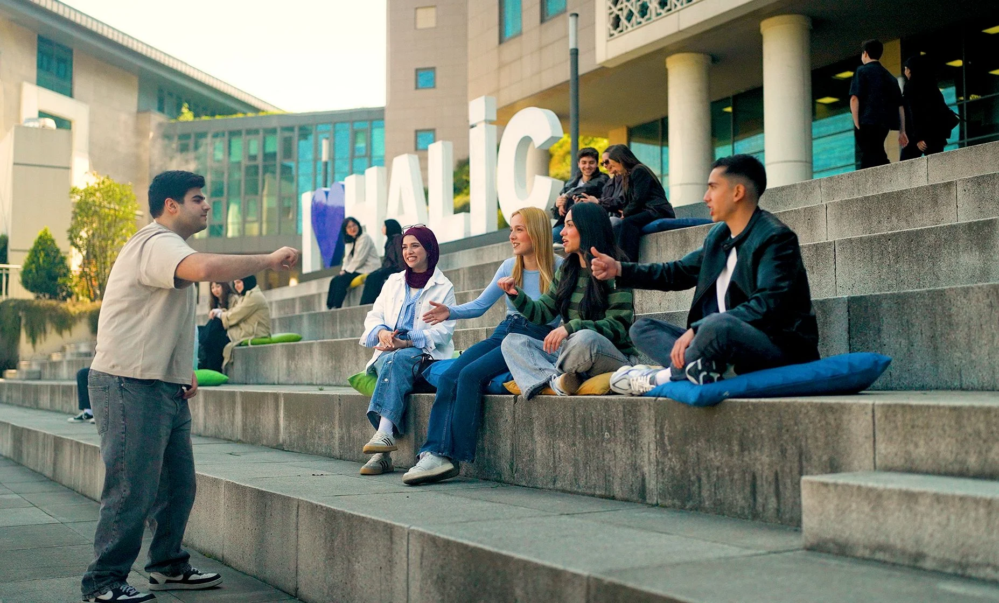
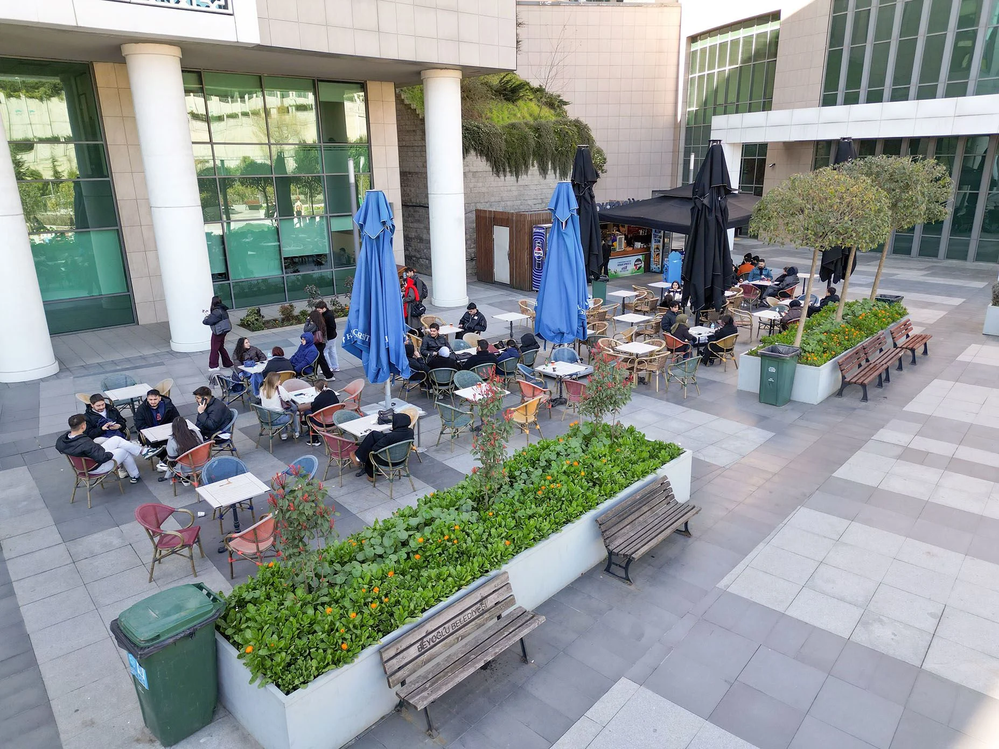
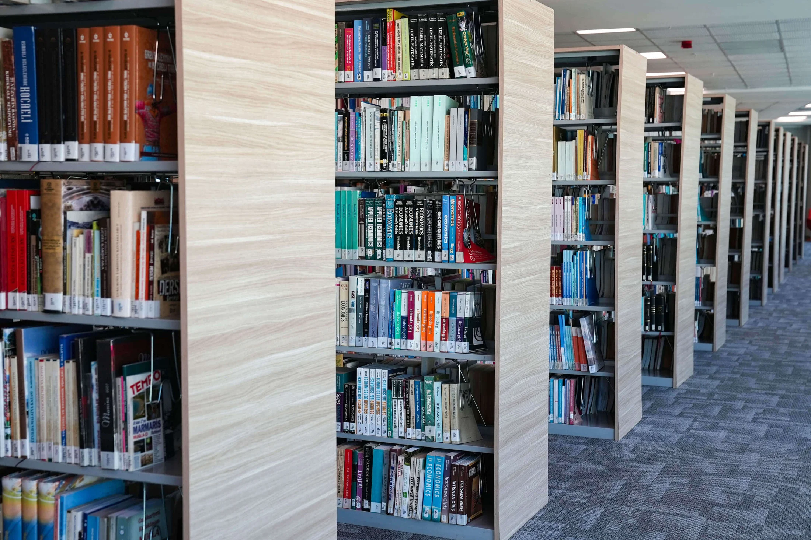
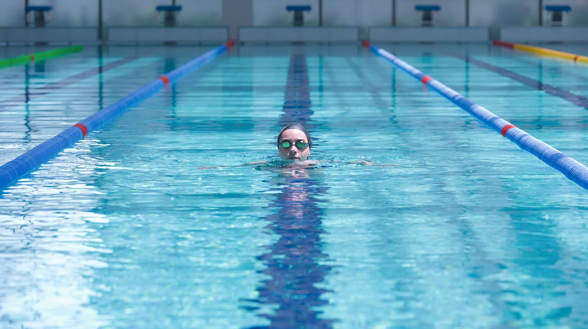
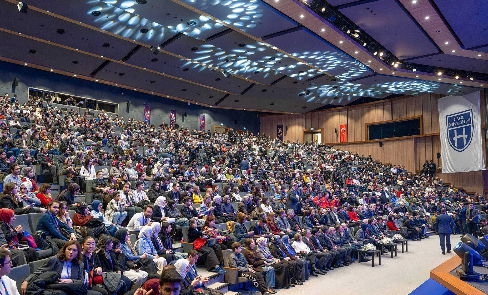
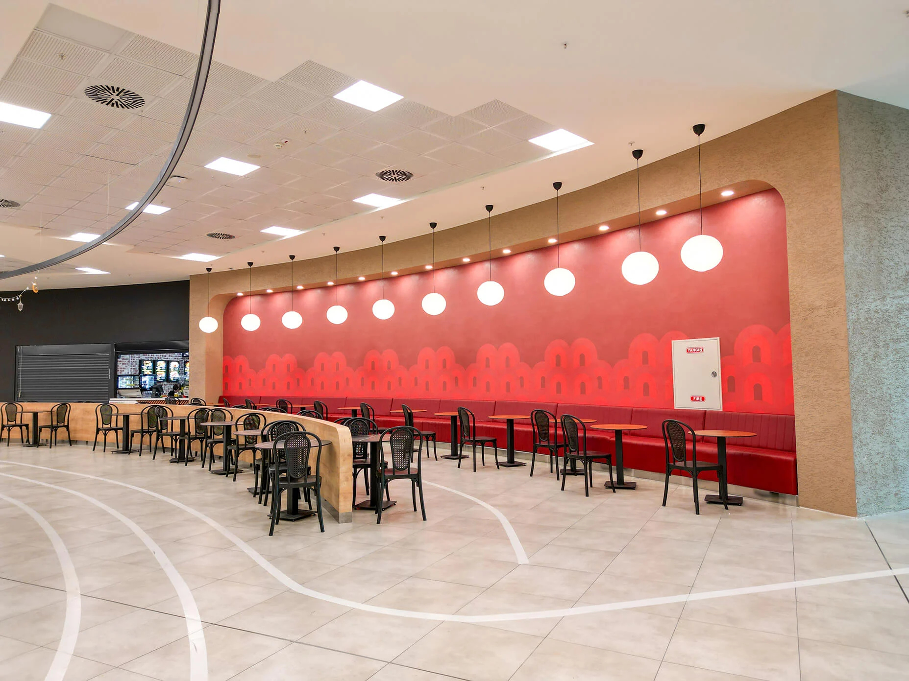
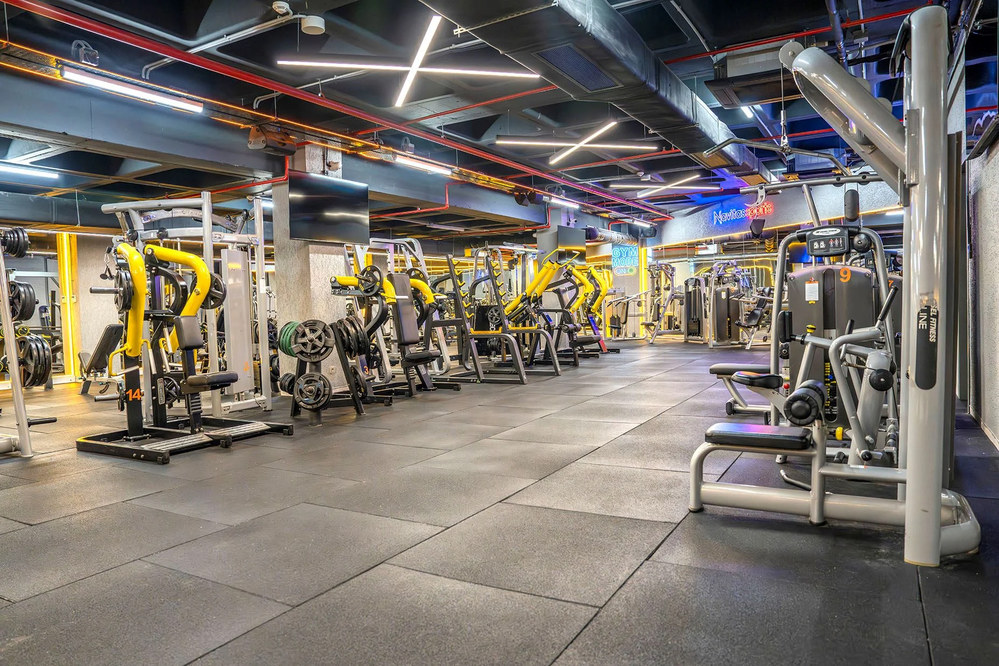
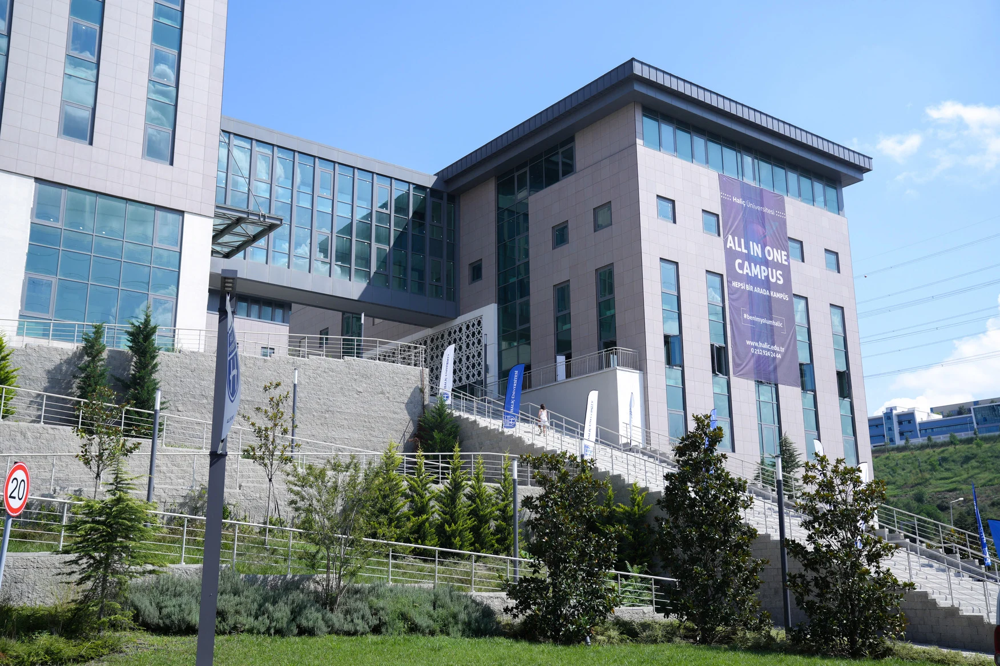

GELECEĞİNEYER AÇ.
SENİN İLGİN. SENİN YOLUN.
HANGİ HAYALİN PEŞİNDESİN?
BİR ÜNİVERSİTEDEN FAZLASI
Merakın geleceğine,
hayallerin kendi hikâyene dönüşsün.
Laboratuvarda, atölyede, sahnede
ve kampüsün

her köşesinde.Sağlıktan mühendisliğe, sanattan sosyal bilimlere.
İlgi alanından yola çık, Haliç’te kendi yolunu çiz.
Ve evet… bu hikâyenin başrolü sensin!
SENİN YERİN!Kampüsü gezelim mi?
GELECEK, MERAK ETTİĞİN YERDE.
Senin merakın.
Senin sahnen.
Bir alan seç. Bölümleri keşfet.
Gerisini adım adım birlikte netleştiririz.
Kendine yakın bulduğun bilete dokun. Ya da aşağıdan bölümünü ara.Biletleri kaydır →
Biraz daha netleştir: eğitim düzeyi, puan türü ve dil
Merakının peşinden.
Şimdi biraz yakından bakalım.Birlikte başka bir yol bulalım.
Bu ölçütlerle eşleşen program bulunamadı. Aramanı kısaltabilir veya filtreleri temizleyebilirsin.
Puanlar, ücretler ve burslar
RESMÎ TABLO · 2026Hayalini
netleştir.
Bölümün, yerleştirme koşulları ve maliyeti.
Hepsini birlikte değerlendir.
Kontenjan, taban puan, başarı sırası ve öğrenim ücretini resmî tabloda incele. Ücret seçeneğini değerlendirirken bursun kapsamını, hazırlık bilgisini ve tercih indirimi koşullarını birlikte oku.
2026 puan ve ücret tablosuPuan, kontenjan ve ücretin ait olduğu yılı resmî tabloda ayrı ayrı kontrol et. Hazırlık ve indirim koşulları programa göre değişebilir.
Hedefine destek
Potansiyeline
inan.
Her bursun kapsamı ve devam koşulları farklıdır.
Sana uygun seçenekleri ayrıntılarıyla incele.
HALİÇ’TE HAYAT
Dene. Üret.
Keşfet.
Sadece derslerden ibaret değil.Teorik bilgini uygulamayla buluştur. Laboratuvar ve atölyeleriyle Haliç’te öğrenme ortamını yakından tanı.
Daha yakından tanıYENİ BİR DENEYİME AÇIL
İSTANBUL’DAN
DÜNYAYA.
Erasmus+ ile farklı kültürleri ve öğrenme ortamlarını keşfet. Bölümüne ve ülkeye göre anlaşmalı üniversiteleri incele, kendi yolculuğunu planla.
Erasmus+ olanakları Hareketlilik olanakları; bölüm anlaşmalarına, kontenjanlara ve ilgili başvuru koşullarına bağlıdır.BİR GÜNÜN NASIL GEÇER?
DERS ARASI?
HAYATIN TAM İÇİ.
Bir bak, kendini burada hayal et.
Kampüste keşfetMERAKINA YER AÇ.
Kütüphane ve çalışma alanları

Kampüste keşfetRİTMİNİ BUL.
Spor ve sağlıklı yaşam

Kampüste keşfetBİR ARAYA GEL.
Kültür, sanat ve etkinlikler

Kampüste keşfetMOLA VER. PAYLAŞ.
Yemekhane ve sosyal alanlar

Kampüste keşfetHAREKETE GEÇ.
Fitness ve spor olanakları

Kampüste keşfetYAŞAMINI PLANLA.
Kız öğrenci yurdu hakkında
Aklındaki sorular
İyi soru.
Net cevap.
Bursumun kapsamını ve süresini nasıl öğrenebilirim?+
ÖSYM bursunun kapsamı ve devam süresi ile diğer bursların koşulları ayrı ayrı açıklanır. Seçtiğin bursun resmî sayfasındaki eğitim süresi ve kapsam bilgilerini birlikte incele.
ÖSYM burs koşullarını inceleÜcretlere ve tercih indirimlerine nereden ulaşabilirim?+
Resmî kontenjan, puan ve ücret tablosunda programını ve ilgili burs/indirim seçeneğini bulabilirsin. Tutarın ait olduğu yılı ve tercih indirimi koşullarını kontrol et; farklı indirimlerin birlikte uygulanabildiğini varsayma.
Puan ve ücret tablosuna gitHazırlık eğitiminin ücreti nasıl değerlendirilir?+
Hazırlık ücreti resmî ücret içeriğinde ayrıca belirtilir. Seçtiğin program ve burs seçeneğinde hazırlığın kapsama dahil olup olmadığını tablo ve burs koşullarıyla birlikte kontrol et. Netleşmeyen durumlar için danışmanlık desteği alabilirsin.
Resmî ücret bilgilerini inceleKampüse gelmeden önce gezebilir miyim?+
Evet. Sanal kampüs turuyla Haliç Üniversitesi’ni çevrim içi keşfedebilirsin. Kampüs sayfasından öğrenme alanlarını, sosyal olanakları ve ulaşım bilgilerini inceleyebilirsin.
Sanal tura başlaYurt ve barınma bilgilerine nasıl ulaşabilirim?+
Kız öğrenci yurdu için resmî sayfada yurt sitesi, ön kayıt ve ödeme bilgilerine bağlantılar bulunur. Kontenjan, kabul ve ücret bilgilerini ilgili yurt kanalından doğrulamalısın.
Kız öğrenci yurdunu incele“Danışmana sor” resmî başvuru anlamına mı geliyor?+
Bu alan, bölüm ve tercih sürecinde bilgi almak için iletişim seçeneklerini sunar. Üniversiteye resmî başvuru veya kayıt işlemi değildir.
Aday öğrenci iletişim sayfasıBİRLİKTE KARAR VERELİM
GELECEĞİNİ
BİRLİKTE
KONUŞALIM!
Bölümler, burslar veya kampüs yaşamı…
Aklındaki sorular için buradayız.